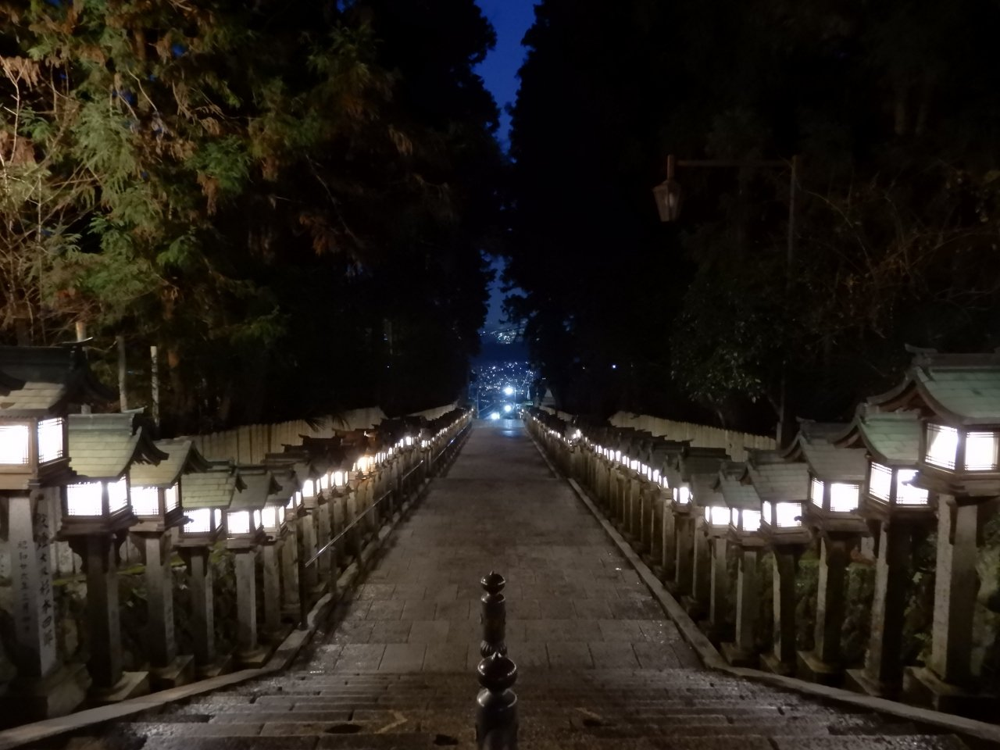
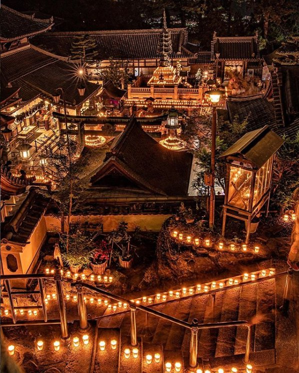

宝山寺 · "Ikoma Shoten-san"
Known locally as Ikoma Shoten-san, Hozanji is a major pilgrimage site dedicated to Daishō Kangiten, a deity believed to grant worldly wishes — and its history runs deeper than almost anything else on this tour. Tradition holds that the mountain ascetic En no Gyōja trained in a cave on these grounds as far back as 655, the founding year the temple itself claims. That cave, known as Hannya-kutsu, is said to take its name from a copy of the Prajñāpāramitā Sutra he placed inside it. Kūkai, the monk who founded Shingon Buddhism, is also said to have trained on this same mountain.
The temple as it stands today traces to the 17th century, when the priest Tankai — a serious scholar-monk trained at Eitai-ji in Edo and on Mt. Kōya — enshrined Daishō Kangiten here. Tankai's rituals for the deity were said to be so effective that his reputation spread widely, and Hozanji became one of the most visited temples in the region.


Open Hozanji Temple in Google Maps